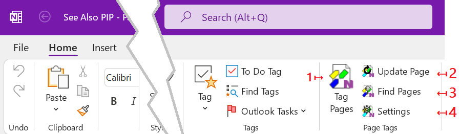

The OneNote Ribbon Bar
All commands and dialogs of the OneNote Tagging Kit are available in the
Home tab of OneNote ribbon bar.

- The Tag Pages dialog. Manage Page Tags on OneNote pages (add / remove).
- The Update Pages command. Update imported tags and Saved Searches on the current page.
- The Find Pages dialog. Find Notes by tag and full-text filters.
- The Settings dialog. Manage add-in settings.